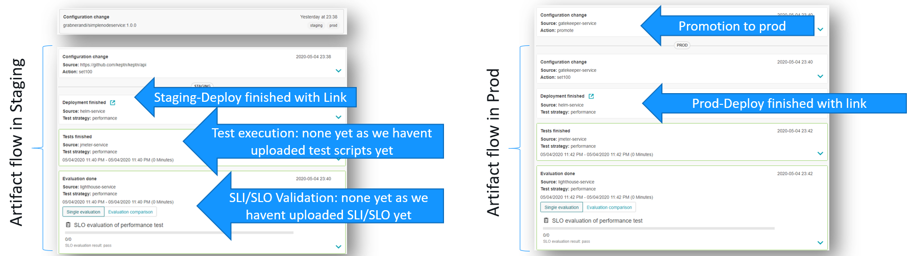
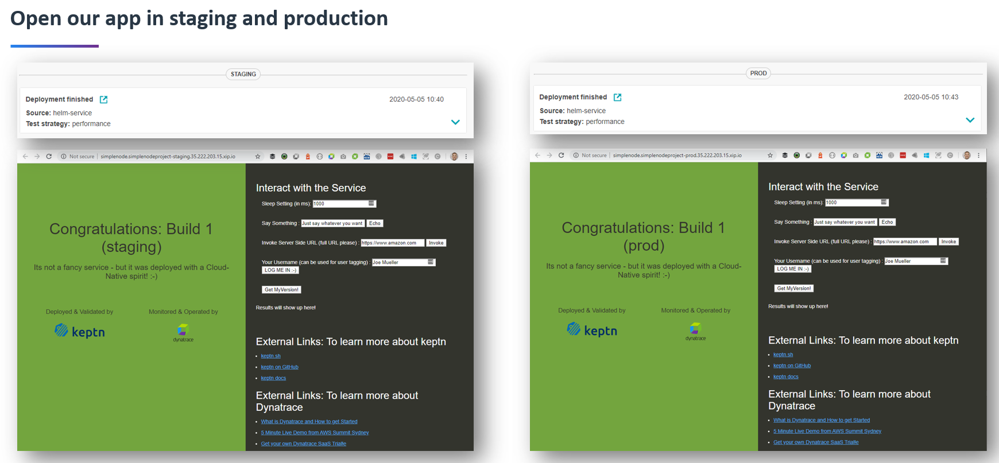
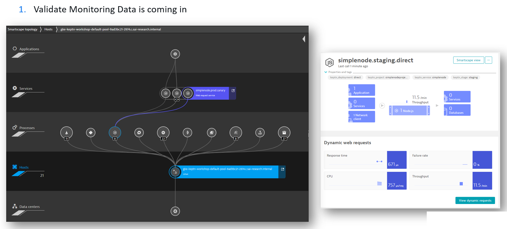
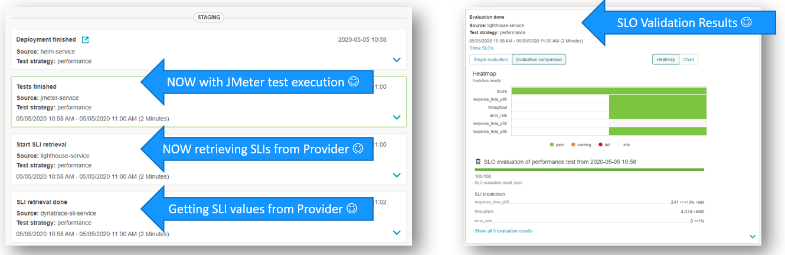

In this tutorial you'll get a full tour of setting up Keptn for multi-stage progressive delivery for a node-js based microservice application.
The tutorial also gives you insights into load test automation and extending SLIs/SLOs with Load Test specific metrics gathered through Dynatrace Calculated Metrics!
Alright - here is the complete overview on what you will learn:

What you'll learn
- How to create a Keptn project for multi-stage delivery
- How to onboard a container based microservice
- How to deploy your first version of the microservice with blue/green deployments
- How to setup a basic SLI/SLO-based quality gate between staging and production
- How to define automated performance tests as part of the quality gate
- How to prevent bad builds of your microservice to reach production
- How to extend SLIs & SLOs with advanced Dynatrace metrics
- How to create a Dynatrace Performance Insights Dashboard
- How to integrate other tools like Slack, MS Team, etc in your Keptn integration
You'll find a time estimate until the end of this tutorial in the right top corner of your screen - this should give you guidance how much time is needed for each step.
Before you can get started, please make sure to have Keptn installed on your Kubernetes cluster.
If not, please follow one of these tutorials to install Keptn on your favourite Kubernetes distribution.
What you need in order to complete this tutorial is
1: keptn status needs to successfully connect to your keptn instance
2: kubectl needs to be configured to connect to your k8s cluster
3: you have access to the Keptns Bridge. If you have not yet exposed it please do so as described in Expose Keptn's Bridge
For enabling the Keptn Quality Gates, we are going to use Dynatrace as the data provider. Therefore, we are going to setup Dynatrace in our Kubernetes cluster to have our sample application monitored and we can use the monitoring data for both the basis for evaluating quality gates as well as a trigger to start self-healing.
If you don't have a Dynatrace tenant yet, sign up for a free trial or a developer account.
- Create a Dynatrace API TokenLog in to your Dynatrace tenant and go to Settings > Integration > Dynatrace API. Then, create a new API token with the following permissions:
- Access problem and event feed, metrics and topology
- Access logs
- Configure maintenance windows
- Read configuration
- Write configuration
- Capture request data
- Real user monitoring JavaScript tag management
- Create a Dynatrace PaaS TokenIn your Dynatrace tenant, go to Settings > Integration > Platform as a Service, and create a new PaaS Token.
- Store your credentials in a Kubernetes secret by executing the following command. The
DT_TENANThas to be set according to the appropriate pattern:- Dynatrace SaaS tenant (this format is most likely for you):
{your-environment-id}.live.dynatrace.com - Dynatrace-managed tenant:
{your-domain}/e/{your-environment-id}
kubectlcommand itself.
If you used the variables, the next command can be copied and pasted without modifications. If you have not set the variable, please make sure to set the right values in the next command.DT_TENANT=yourtenant.live.dynatrace.com DT_API_TOKEN=yourAPItoken DT_PAAS_TOKEN=yourPAAStokenkubectl -n keptn create secret generic dynatrace --from-literal="DT_TENANT=$DT_TENANT" --from-literal="DT_API_TOKEN=$DT_API_TOKEN" --from-literal="DT_PAAS_TOKEN=$DT_PAAS_TOKEN" - Dynatrace SaaS tenant (this format is most likely for you):
- The Dynatrace integration into Keptn is handled by the dynatrace-service. To install the dynatrace-service, execute:
kubectl apply -f https://raw.githubusercontent.com/keptn-contrib/dynatrace-service/0.6.2/deploy/manifests/dynatrace-service/dynatrace-service.yaml - When the service is deployed, use the following command to install Dynatrace on your cluster. If Dynatrace is already deployed, the current deployment of Dynatrace will not be modified.
keptn configure monitoring dynatrace
Verify Dynatrace configuration
Since Keptn has configured your Dynatrace tenant, let us take a look what has be done for you:
- Tagging rules: When you navigate to Settings > Tags > Automatically applied tags in your Dynatrace tenant, you will find following tagging rules:
- keptn_deployment
- keptn_project
- keptn_service
- keptn_stage
- Problem notification: A problem notification has been set up to inform Keptn of any problems with your services to allow auto-remediation. You can check the problem notification by navigating to Settings > Integration > Problem notifications and you will find a keptn remediation problem notification.
- Alerting profile: An alerting profile with all problems set to 0 minutes (immediate) is created. You can review this profile by navigating to Settings > Alerting > Alerting profiles.
- Dashboard and Mangement zone: When creating a new Keptn project or executing the keptn configure monitoring command for a particular project (see Note 1), a dashboard and management zone will be generated reflecting the environment as specified in the shipyard file.
Follow the next steps only if your Dynatrace OneAgent does not work properly.
- To check if the OneAgent does not work properly, the output of
kubectl get pods -n dynatracemight look as follows:NAME READY STATUS RESTARTS AGE dynatrace-oneagent-operator-7f477bf78d-dgwb6 1/1 Running 0 8m21s oneagent-b22m4 0/1 Error 6 8m15s oneagent-k7jn6 0/1 CrashLoopBackOff 6 8m15s - This means that after the initial setup you need to edit the OneAgent custom resource in the Dynatrace namespace and add the following entry to the env section:
env: - name: ONEAGENT_ENABLE_VOLUME_STORAGE value: "true" - To edit the OneAgent custom resource:
kubectl edit oneagent -n dynatrace
At the end of your installation, please verify that all Dynatrace resources are in a Ready and Running status by executing kubectl get pods -n dynatrace:
NAME READY STATUS RESTARTS AGE
dynatrace-oneagent-operator-7f477bf78d-dgwb6 1/1 Running 0 8m21s
oneagent-b22m4 1/1 Running 0 8m21s
oneagent-k7jn6 1/1 Running 0 8m21s
A project in Keptn is the logical unit that can hold multiple (micro)services. Therefore, it is the starting point for each Keptn installation.
To get all files you need for this tutorial, please clone the example repo to your local machine.
git clone --branch release-0.6.2 https://github.com/keptn/examples.git --single-branch
cd examples/simplenode
Create a new project for your services using the keptn create project command. In this example, the project is called simplenodeproject. Before executing the following command, make sure you are in the examples/simplenodeservice/keptn folder.
keptn create project simplenodeproject --shipyard=./shipyard.yaml
For creating the project, the tutorial relies on a shipyard.yaml file as shown below:
stages:
- name: "staging"
deployment_strategy: "direct"
test_strategy: "performance"
- name: "prod"
deployment_strategy: "blue_green_service"
test_strategy: "performance"
This shipyard contains two stages: staging, and prod. This results in the three Kubernetes namespaces: simplenodeproject-staging, and simplenodeproject-prod.
- staging will have a direct (big bang) deployment strategy and performance tests are executed. If tests are good and SLI/SLO based quality gates are passed Keptn will promote it to the prod stage
- prod will have a blue/green deployment strategy also using performance tests to validate that deployment and eventually switch between blue/green in case performance testing has revelead a problem
After creating the project, services can be onboarded to our project.
- Onboard the simplenode service using the keptn onboard service command:
keptn onboard service simplenode --project=simplenodeproject --chart=./carts
We have passed a helm charts directory to onboard service. Keptn will use this Helm Chart for its delivery. It will also automatically create the respective deployments for our blue/green and direct deployment strategies in staging and prod. There is nothing we have to worry about
After onboarding our service we can immediately start using Keptn to deploy an artifact.
- Lets deploy version 1 of our simplenode service by executing the keptn send event new-artifact command:
keptn send event new-artifact --project=simplenodeproject --service=simplenode --image=grabnerandi/simplenodeservice --tag=1.0.0
Keptn will now start deploying version 1.0.0 into staging. During the first deployment some special initial steps are performed, e.g: namespaces get created for each stage.
But - as we haven't yet uploaded tests and not specified SLI/SLOs for the Quality Gates Keptn will skip these checks and promote the artifact rather quickly into production. Overall that process should not take longer than 2-3 minutes
- Optional: Verify the pods that should have been created for services carts and carts-db:
kubectl get pods --all-namespaces | grep simplenodesimplenodeproject-prod simplenode-54d9b6775-4hlwn 1/1 Running 0 12m simplenodeproject-staging simplenode-54d9b6775-rm8rw 1/1 Running 0 12m
After every deployment we can start in the Keptn's bridge to validate the progress. We can answer questions like
- Did the deployment already happen?
- What is the URL of the deployed service in each stage?
- Did anything bad happen?
- Go to Keptn's Bridge and see how Keptn has deployed the service into staging and then production:
The bridge also gives you access to the links of the deployed service.

If you click on them you should see a new browser window pop open showing you version 1 in staging and version 1 in production:

Once Keptn has deployed our application and we have successfully validated that the app is indeed running by accessing the app through its URL we can also validate that Dynatrace is monitoring not only your k8s cluster but also the app we have deployed.
In Dynatrace use the navigation menu on the left and navigate to the Host view. You should find an entry for each of your k8s cluster nodes. Click one of them. You should see host metrics, list of processes & containers, events ...
Via the ... button you can access the Smartscape view which gives you full stack visiblity of everything that is hosted on that k8s cluster node. You should also see our deployed Node.js services which you can click on and navigate to the detailed view:

If you navigate to the service view you will notice that the service has 4 tags on it: keptn_project, keptn_stage, keptn_service and keptn_deployment. These tags are extracted from the Helm Chart which is passing this information via DT_CUSTOM_PROP. These tags also later allow Keptn to query data exactly for a specific deployed service, e.g: only data from our service deployed in staging!
During the evaluation of a quality gate, the Dynatrace SLI provider is required that is implemented by an internal Keptn service, the dynatrace-sli-service. This service will fetch the values for the SLIs that are referenced in an SLO configuration.
kubectl apply -f https://raw.githubusercontent.com/keptn-contrib/dynatrace-sli-service/0.4.0/deploy/service.yaml
Configure the already onboarded project with the new SLI provider:
keptn configure monitoring dynatrace --project=simplenodeproject
Keptn Quality Gates are based on the concepts of
- SLIs (Service Level Indicators): what metrics (=indicators) are important and how do we query them
- SLOs (Service Level Objectives): what conditions (=objectives) must be met to consider this a good or a bad value per indicator
In Keptn we therefore need to provide an sli.yaml that defines how to query certain metrics from a specific tool, e.g: Dynatrace. We also need to provide an slo.yaml that defines the conditions - this file is tool independant.
To learn more about the sli.yaml and slo.yaml files, go to Specifications for Site Reliability Engineering with Keptn.
Our example comes with a basic and an extended set of SLIs and SLOs. In this step we focus on the basic version.
We have to upload two files using the add-resource command.
Ensure you navigate to the examples/simplenode/keptn folder.
- First, lets upload our
dynatrace/sli_basic.yamlasdynatrace/sli.yaml!keptn add-resource --project=simplenodeproject --stage=staging --service=simplenode --resource=dynatrace/sli_basic.yaml --resourceUri=dynatrace/sli.yaml
This Dynatrace specific SLI contains the definition of 5 indicators. Each indicator has a logical name, e.g: throughput and the tool specific query, e.g: Dynatrace Metrics Query. You can also see that the query definition can leverage placeholders such as $PROJECT, $SERVICE, $STAGE ... - this is great as we can use them to filter on exactly those services managed by Keptn as long as these tags are put on the Dynatrace entities:
---
spec_version: '1.0'
indicators:
throughput: "metricSelector=builtin:service.requestCount.total:merge(0):sum&entitySelector=tag(keptn_project:$PROJECT),tag(keptn_stage:$STAGE),tag(keptn_service:$SERVICE),tag(keptn_deployment:$DEPLOYMENT),type(SERVICE)"
error_rate: "metricSelector=builtin:service.errors.total.rate:merge(0):avg&entitySelector=tag(keptn_project:$PROJECT),tag(keptn_stage:$STAGE),tag(keptn_service:$SERVICE),tag(keptn_deployment:$DEPLOYMENT),type(SERVICE)"
response_time_p50: "metricSelector=builtin:service.response.time:merge(0):percentile(50)&entitySelector=tag(keptn_project:$PROJECT),tag(keptn_stage:$STAGE),tag(keptn_service:$SERVICE),tag(keptn_deployment:$DEPLOYMENT),type(SERVICE)"
response_time_p90: "metricSelector=builtin:service.response.time:merge(0):percentile(90)&entitySelector=tag(keptn_project:$PROJECT),tag(keptn_stage:$STAGE),tag(keptn_service:$SERVICE),tag(keptn_deployment:$DEPLOYMENT),type(SERVICE)"
response_time_p95: "metricSelector=builtin:service.response.time:merge(0):percentile(95)&entitySelector=tag(keptn_project:$PROJECT),tag(keptn_stage:$STAGE),tag(keptn_service:$SERVICE),tag(keptn_deployment:$DEPLOYMENT),type(SERVICE)"
- Second, lets upload our
slo_basic.yamlasslo.yamlkeptn add-resource --project=simplenodeproject --stage=staging --service=simplenode --resource=slo_basic.yaml --resourceUri=slo.yaml
This slo.yaml defines the objectives and references the SLIs defined in the sli.yaml:
---
spec_version: '0.1.0'
comparison:
compare_with: "single_result"
include_result_with_score: "pass"
aggregate_function: avg
objectives:
- sli: response_time_p95
pass: # pass if (relative change <= 10% AND absolute value is < 500)
- criteria:
- "<=+10%" # relative values require a prefixed sign (plus or minus)
- "<600" # absolute values only require a logical operator
warning: # if the response time is below 800ms, the result should be a warning
- criteria:
- "<=800"
- sli: throughput
pass:
- criteria:
- ">4000"
- sli: error_rate
weight: 2
pass:
- criteria:
- "<=1%"
warning:
- criteria:
- "<=2%"
- sli: response_time_p50
- sli: response_time_p90
pass:
- criteria:
- "<=+10%"
warning:
- criteria:
- "<=+10%"
total_score:
pass: "90%"
warning: "75%"
Uploading SLIs & SLOs alone is not enough. What we need are some tests, e.g: simple API performance tests that get executed by Keptn. After those tests are executed Keptn will evaluate the SLIs/SLOs for the timeframe of the test execution.
Keptn comes with a JMeter-Service that can execute JMeter tests when a new deployment happened. In our tutorial we are however using the JMeter-Extended-Service as it gives us some more flexibilty with different workloads.
- We simply "upgrade" from JMeter-Service to JMeter-Extended-Service by replacing the image:
kubectl -n keptn set image deployment/jmeter-service jmeter-service=keptncontrib/jmeter-extended-service:0.1.0
Now we are ready to upload a test script and workload configuration for our staging stage. Ensure you navigate to the examples/simplenode/keptn folder.
- Add load test script & workload config to our staging stage
keptn add-resource --project=simplenodeproject --stage=staging --service=simplenode --resource=jmeter/load.jmx --resourceUri=jmeter/load.jmxkeptn add-resource --project=simplenodeproject --stage=staging --service=simplenode --resource=jmeter/jmeter.conf.yaml --resourceUri=jmeter/jmeter.conf.yaml
As we have now uploaded tests, SLIs & SLOs we can run the same artifact of version 1.0.0 through the delivery pipeline. The difference now is that Keptn will automatically execute tests in staging and then evaluates our indicators (specified in SLI.yaml) against our objectives (specified in SLO.yaml) for the timeframe of the test execution.
- Lets deploy build number 1.0.0 again
keptn send event new-artifact --project=simplenodeproject --service=simplenode --image=grabnerandi/simplenodeservice --tag=1.0.0 - Lets validate quality gate in bridge:
Remember - this time the deployment will take a bit longer as the tests take about 2-3 minutes to run before Keptn can pull in metrics from Dynatrace. Overall a deployment will now take about 5 minutes. Go back to the Keptn's Bridge and watch for the new events coming in. In a couple of minutes you will also see the evaluation results of your Quality Gate. Lets hope all is green and the build makes it all the way into production :-)

So far we have uploaded our test script, test workload and our SLI & SLO for our staging stage.
If we also want a quality gate to be enforced after a blue/green deployment is done to production to validate if the production deployment is good enough or whether the Blue/Green deployment should be reverted back we have to add SLI.yaml, SLO.yaml and our tests for production as well.
- First, lets upload our
dynatrace/sli_basic.yamlasdynatrace/sli.yamlfor prod!
We could upload a different sli.yaml for production than the one we have for staging. In a real scenario you probably want this as you may want to include additonal indicators from other parts of the infrastructure that you didnt have available in staging. For our sample we just use the same sli_basic.yaml!
keptn add-resource --project=simplenodeproject --stage=prod --service=simplenode --resource=dynatrace/sli_basic.yaml --resourceUri=dynatrace/sli.yaml
If you wonder - how can the same SLI be working in production? Well - its because the SLI is leveraging the placeholders such as $STAGE. Once Keptn will evaluate the SLIs for production this value will be replaced with prod. And - as long as all services are correctly tagged in Dynatrace with e.g: keptn_stage:prod we are all good.
Here is one of the indicator definitions of this SLI file so you see what I mean:
indicators:
throughput: "metricSelector=builtin:service.requestCount.total:merge(0):sum&entitySelector=tag(keptn_project:$PROJECT),tag(keptn_stage:$STAGE),tag(keptn_service:$SERVICE),tag(keptn_deployment:$DEPLOYMENT),type(SERVICE)"
- Second, lets upload our
slo_basic.yamlasslo.yaml
Same as with the SLI. We could upload a different SLO that includes different objectives for production, e.g: you may expect different load behavior or you have different hardware your system runs on. In that case you would adjust the SLOs to reflect what you expect in production. For our sample we just take the same SLO that we used for staging
keptn add-resource --project=simplenodeproject --stage=prod --service=simplenode --resource=slo_basic.yaml --resourceUri=slo.yaml
- Third, lets upload our tests
In order for the quality gates to evaluate a representative timeframe with representative load we will upload tests to production. This will make sure that after Keptn deploys the artifact in production that these tests get executed against the new Blue/Green deployment. After that the quality gate kicks in. If the validation succeeds Keptn will keep the new build - otherwise it will roll back.
We will use the same test scripts as in staging. We could use different tests - but - for our example thats good enough!
keptn add-resource --project=simplenodeproject --stage=prod --service=simplenode --resource=jmeter/load.jmx --resourceUri=jmeter/load.jmx
keptn add-resource --project=simplenodeproject --stage=prod --service=simplenode --resource=jmeter/jmeter.conf.yaml --resourceUri=jmeter/jmeter.conf.yaml
In the last steps we finished setting up tests and quality gates for both staging and production.
Now its time to put this to the test. If you remember - the samplenodeservice app comes with 4 different builds. Every build has a unique characteristic, e.g: some builds are good all the way to production, some builds have a high failure rate and should be stopped by the stagging quality gate, some builds are only problematic in production and should therefore be rolled back during a blue/green validation phase.
Here is what we are going to do in this step. We are going to deploy build 2, 3 and then 4 and validate if Keptn catches all problems as highlighted in the next image:
- Let's deploy build 2.0.0
keptn send event new-artifact --project=simplenodeproject --service=simplenode --image=grabnerandi/simplenodeservice --tag=2.0.0
Watch the bridge and see if build 2.0.0 is stopped by the quality gate. It should - as build 2.0.0 has a high failure rate which is detected by the SLI error_rate!
- Let's deploy build 3.0.0
keptn send event new-artifact --project=simplenodeproject --service=simplenode --image=grabnerandi/simplenodeservice --tag=3.0.0
Watch the bridge and see if build 3.0.0 makes it all the way to production and stays there. It should - as build 3.0.0 has no high failure rate any longer and also doesnt show any other signs of problems. As we have production quality gates enabled as well you should also see tests being executed in production followed by quality gate evaluation.
- Let's deploy build 4.0.0
keptn send event new-artifact --project=simplenodeproject --service=simplenode --image=grabnerandi/simplenodeservice --tag=4.0.0
Watch the bridge and see if build 4.0.0 makes it all the way to production and is then rejected and rolled back to build 3.0.0. Build 4 should pass the quality gate in staging as the problem that is built into 4.0.0 only shows up in production. This is why you should see the build being promoted in production. But - after the tests are executed and evaluation fails Keptn will automatically roll it back to Build 3 in production. You can also validate this by browsing to your app
Our quality gates so far are based on 5 basic metrics: throughput, error rate, response time (p50, p90, p95).
While this is a great start we can do much more!!
Dynatrace gives us the option to extract context information from requests that are executed by test tools. Such context information could be the Test Script Name (load.jmx), Test Scenario Name (fullscenario), Test Step Name (homepage, echo, invoke, version). This information can be passed by the Test Tool using an HTTP Header that can be analyzed by Dynatrace as requests come in. Here is such an example header
X-Dynatrace-Test: LTN=performance_build1;LSN=Test Scenario;TSN=homepage;
The JMeter test file we uploaded - load.jmx has already been adjusted so that it sends these HTTP Headers including information such as Test Step Name (TSN) for every of the 4 test steps it executes: homepage, version, api, invoke
If we want to extend our SLIs with metrics such as "Response Time for Invoke", "Response Time for Homepage" or "Number of backend microservice calls for Invoke" ... we need to do two things
1: Create Request Attributes that tell Dynatrace to extract these HTTP Header values
2: Create Calculated Service Metrics that will give us new metrics split by Test Name
The following image shows how this all plays together:
Good news is that we can fully automate the configuration of Request Attributes and Calculated Service Metrics through the Dynatrace API. We have two scripts that does this for us. Please make sure you navigate into the examples\simplenodeservice\dynatrace folder. Here we execute the following scripts:
./createTestRequestAttributes.sh
./createTestStepCalculatedMetrics.sh CONTEXTLESS keptn_project
The first script will create but not overwrite the Request Attribute rules for TSN (Test Step Name), LTN (Load Test Name) & LSN (Load Script Name)
The second script will create but not overwrite the following Calculated Service Metrics:
Test Step Response Time | calc:service.teststepresponsetime |
Test Step Service Calls | calc:service.teststepservicecalls |
Test Step DB Calls | calc:service.teststepdbcalls |
Test Step Failure Rate | calc:service.teststepfailurerate |
Test Requests by HTTP Status | calc:service.testrequestsbyhttpstatus |
Test Step CPU | calc:service.teststepcpu |
Test Step DB Calls | calc:service.teststepdbcalls |
From now on - everytime Keptn executes these JMeter tests we will have new metrics available that provide a data dimension for each Test Step Name.
This also allows us to extend our SLIs with these metric definitions. In our examples we therefore have a sli_perftest.yaml and also a slo_perftest.yaml that include these new metrics.
Make sure you navigate to the examples\simplenodeservice\keptn directory. Now:
- First, lets upload our
dynatrace/sli_perftest.yamlasdynatrace/sli.yamlfor staging!
We could upload these new sli files with the extended indicators to both staging and production. But - in order to show you that we can have different SLIs and SLOs in each stage we just upload it to staging.
keptn add-resource --project=simplenodeproject --stage=staging --service=simplenode --resource=dynatrace/sli_perftest.yaml --resourceUri=dynatrace/sli.yaml
Please explore the sli_perftest.yaml file yourself to see the new queries. For reference here are two of the queries that show you how the Dynatrace Metrics API allows us to query calculated service metrics for individual dimensions (e.g: Test Name):
rt_test_version: "metricSelector=calc:service.teststepresponsetime:filter(eq(Test Step,version)):merge(0):avg&entitySelector=tag(keptn_project:$PROJECT),tag(keptn_stage:$STAGE),tag(keptn_service:$SERVICE),tag(keptn_deployment:$DEPLOYMENT),type(SERVICE)"
rt_test_homepage: "metricSelector=calc:service.teststepresponsetime:filter(eq(Test Step,homepage)):merge(0):avg&entitySelector=tag(keptn_project:$PROJECT),tag(keptn_stage:$STAGE),tag(keptn_service:$SERVICE),tag(keptn_deployment:$DEPLOYMENT),type(SERVICE)"
- Second, lets upload our
slo_perftest.yamlasslo.yaml
Same as with the SLI. We just upload it to the staging as this file now defines objectives for the new indicators defined in the SLI.
keptn add-resource --project=simplenodeproject --stage=staging --service=simplenode --resource=slo_perftest.yaml --resourceUri=slo.yaml
Let's go back to build 1.0.0 and deploy it again. What we should see is that Keptn will query all these additional test step specific metrics for the quality gate evaluation in staging.
- Lets deploy build number 1.0.0 again
keptn send event new-artifact --project=simplenodeproject --service=simplenode --image=grabnerandi/simplenodeservice --tag=1.0.0 - Lets validate quality gate in bridge:
What you should see are all these new SLIs showing up in the bridge!

While it is great that Keptn pulls in all these metrics automatically for us and evaluates them as part of the quality gate - some of us might still want to look at a dashboard - seeing all metrics in real-time while tests are running. Or maybe going back in time and explore the details of a test that ran in the past.
Dynatrace provides an automation API to create dashboards, allowing us to create a dashboard that shows all key metrics of our application in a single view.
Make sure you navigate to the folder examples\simplenodeservice\dynatrace. Now execute this
$ ./createLoadTestingDashboard.sh
This script will create a new dashboard in Dynatrace called "Keptn Performance as a Self-Service Insights Dashboard". Go to Dynatrace, click on Dashboards and open it up. It should look somewhat like this!

Thanks for taking a full tour through Keptn!
Although Keptn has even more to offer that should have given you a good overview what you can do with Keptn.
What we've covered
Keptn can be easily extended with external tools such as notification tools, other SLI providers, bots to interact with Keptn, etc.
While we do not cover additional integrations in this tutorial, please feel fee to take a look at our integration repositories:
- Keptn Contrib lists mature Keptn integrations that you can use for your Keptn installation
- Keptn Sandbox collects mostly new integrations and those that are currently under development - however, you can also find useful integrations here.
Please visit us in our Keptn Slack and tell us how you like Keptn and this tutorial! We are happy to hear your thoughts & suggestions!
Also, please follow us on Twitter to get the latest news on Keptn, our tutorials and newest releases!